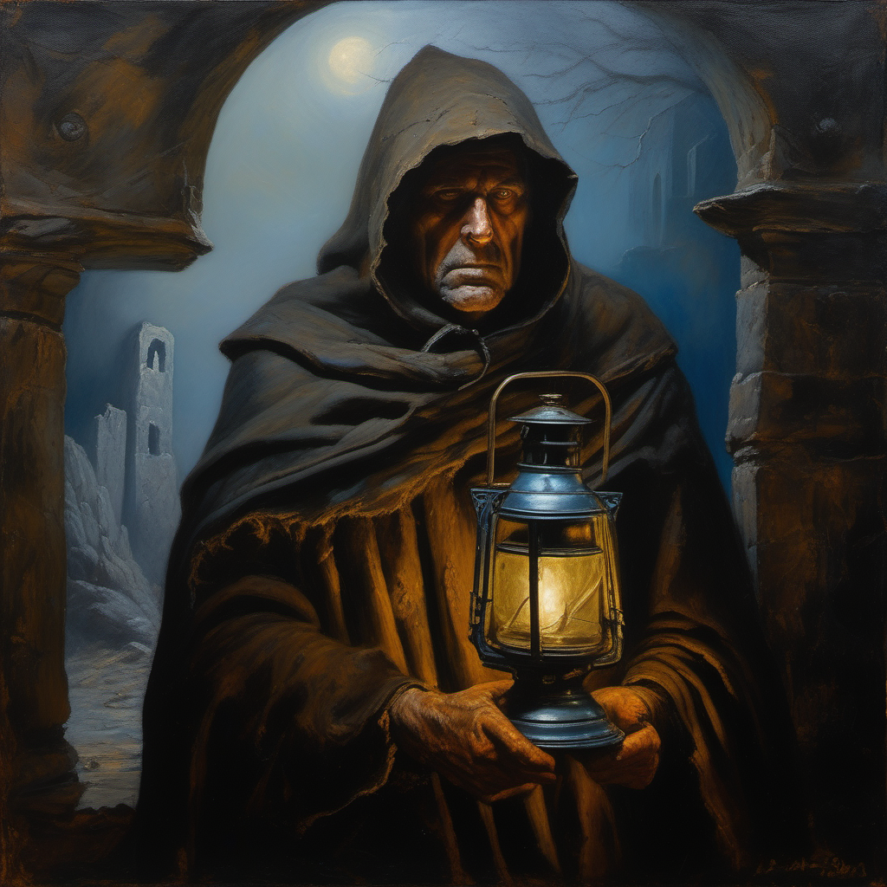
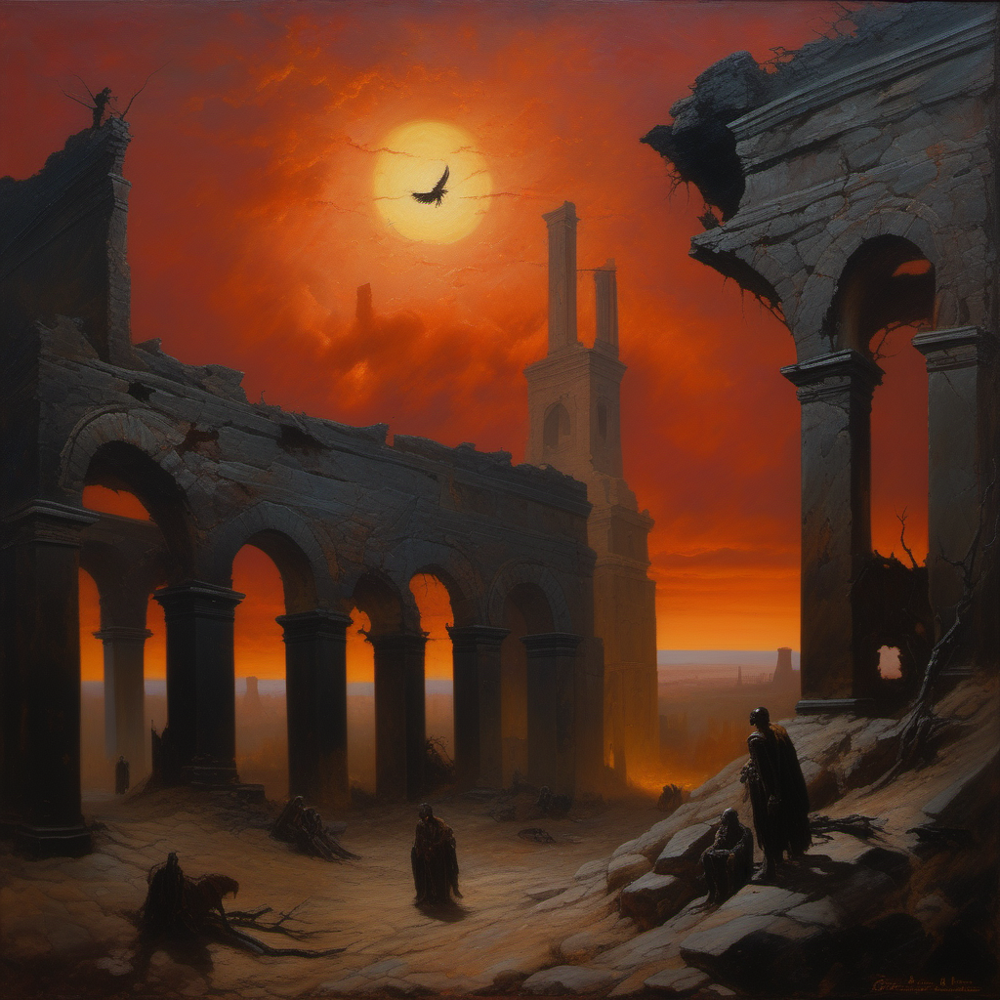
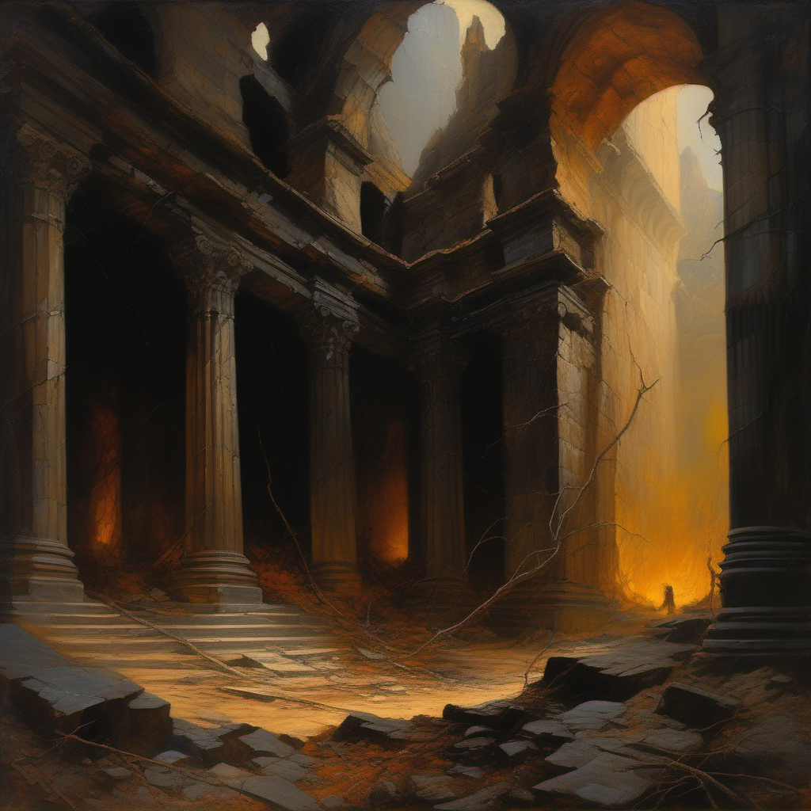
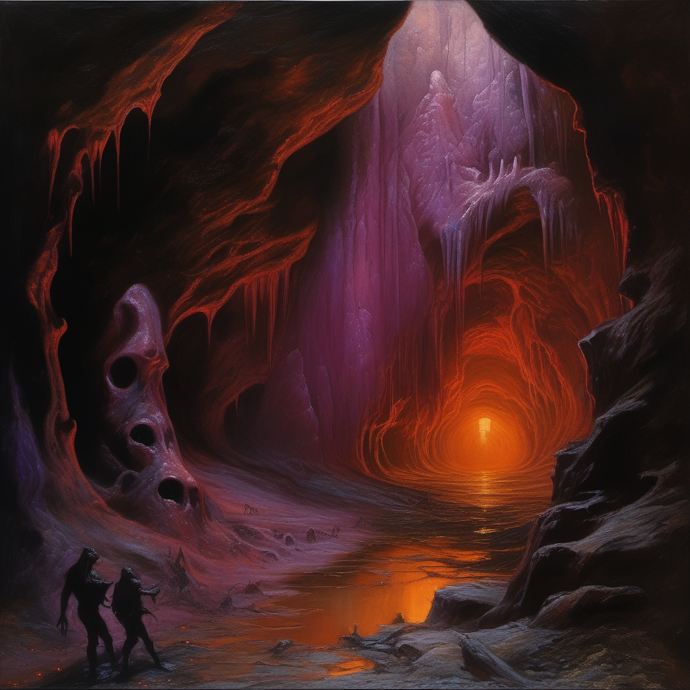
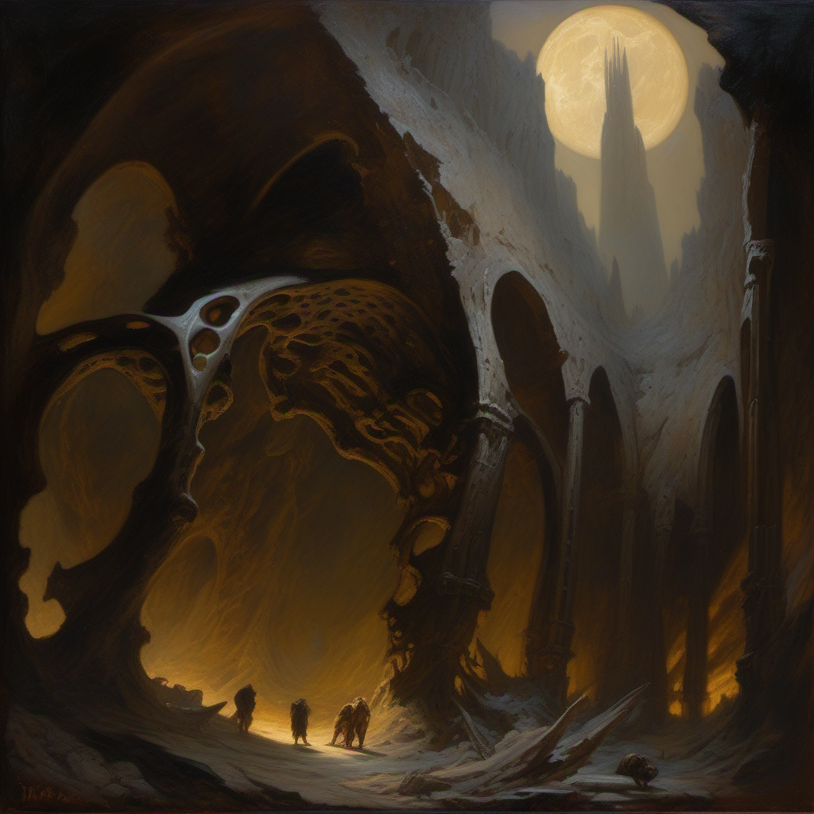
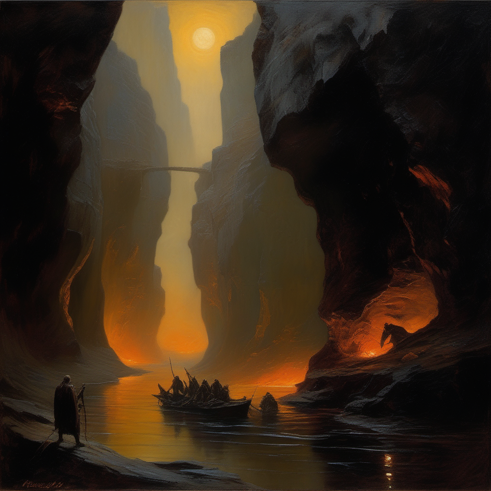
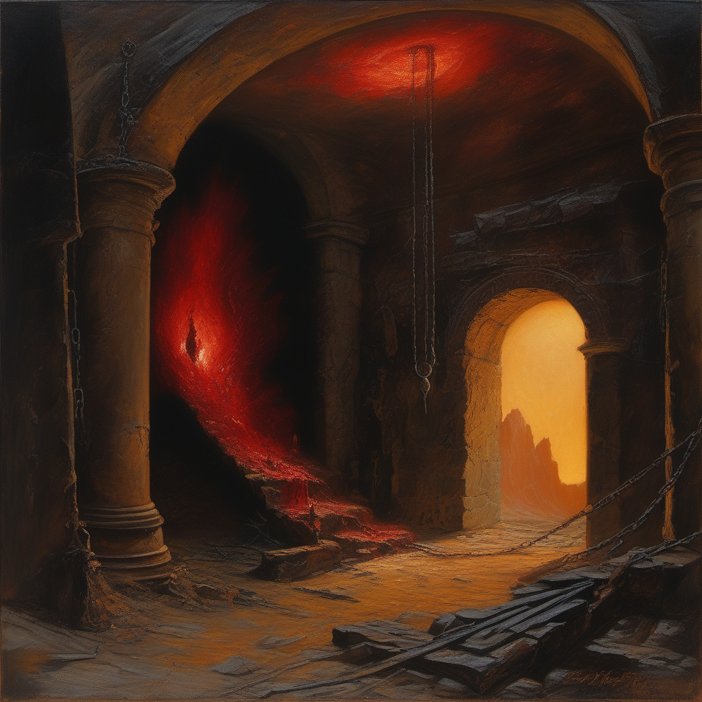
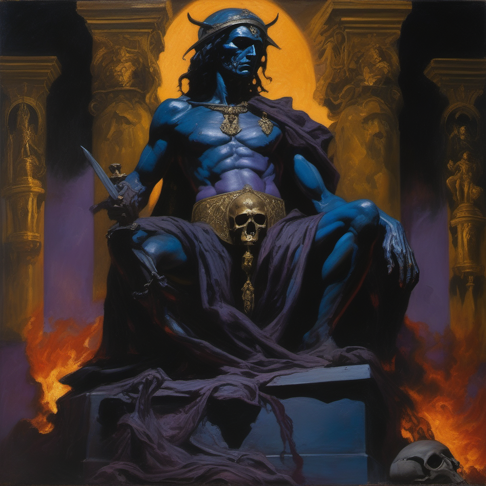
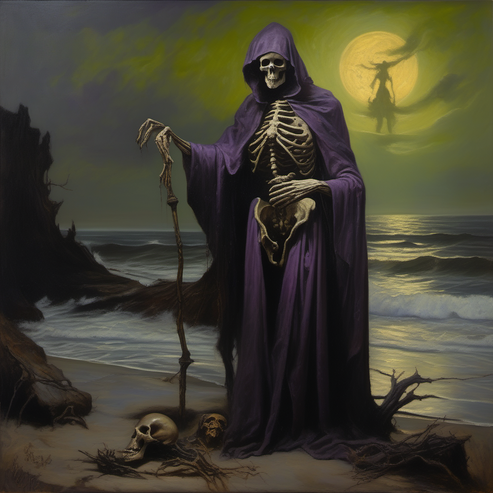
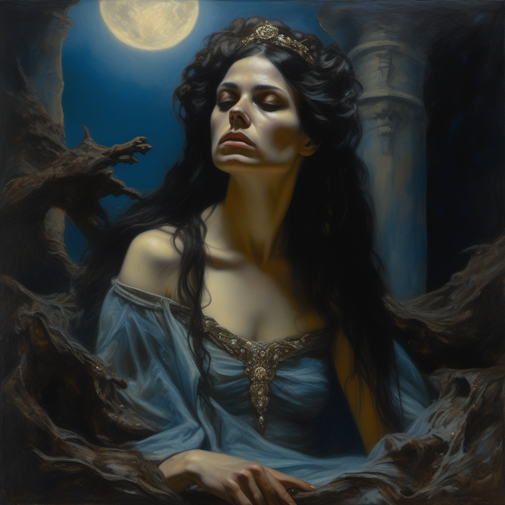

World Design Document
死んだ神の最後の大陸
遥かな過去、神は自らの存在に倦み、自殺した。
宇宙は神の死骸から生まれ、全ての存在は神の断片である。
太陽は暗く曇り、最後の大陸ゾティークだけが残った。
あなたは、神の遺体の最深部——心臓——を目指して降りていく。
Prologue
The Seeker — 探求者

元・タサイドン神殿の墓守
あなたはかつてウンマオスの神殿で屍の神モルディギアンに死者を捧げる墓守だった。
毎日、死者を神殿の奥へ運び、灰色の屍衣を纏う僧侶たちに引き渡す。
それが秩序であり、疑う者はいなかった。
ある夜、あなたは死者の一人が目を開くのを見た。
その瞳は暗く、遠く、そして——「ここは神の体内だ」と囁いた。
死者はそれだけ言って、再び動かなくなった。
その日から、あなたは眠れなくなった。
大地のひび割れ。石壁の脈動。暗い太陽。全てが意味を変えた。
あなたは神殿を去り、神の心臓を探す旅に出た。
そこに何があるのかはわからない。だが、真実があるなら——最も深い場所にあるはずだ。
「世界の向こう側には安息の場所もなく、苦悩の場所もなく、ただ虚無があるだけだ。」
— フィリップ・マインレンダー「救済の哲学」Layer I — Surface
Zothique — The Twilight Continent

地球最後の大陸。太陽は血の蒸気のように暗く曇っている。
太陽はもはや白い光を放たない。血の蒸気のように暗く、曇った琥珀色で空を塗りつぶす。
無数の新しい星が天に出現し、無限の闇が近づいている。
かつての大陸は全て海に沈み、残ったのはこの一つの陸塊——ゾティーク。
科学はとうの昔に忘れ去られ、代わりに死霊術と暗黒魔術が世界を支えている。
地表の主要都市と地域
| 地名 | 特徴 | ゲーム内の役割 |
|---|---|---|
| ウンマオス | ジラック帝国の首都。崩壊した宮殿と暴虐の歴史 | ゲーム開始地点。チュートリアル。最初の降下口 |
| ズル＝バ＝シャイア | 屍の神モルディギアンの都。全ての死者は神に捧げられる | プレイヤーの故郷。死者系カードの入手先 |
| タスーン | 南の砂漠。隠者の魔術師が住む。ナミルラの修行地 | 高レベル魔術の習得エリア |
| オロスの港 | 黒河への入口となる港。船乗りたちが噂を語る | 中層への移行ポイント |
| ウッカストログ | 拷問者の島。残虐な文化が栄える | 呪い系装備・カードの入手先 |
On Zothique, the last continent on Earth, the sun no longer shone with the whiteness of its prime, but was dim and tarnished as if with a vapor of blood.
— Clark Ashton Smith, "The Dark Eidolon"Layer II — The Threshold
The Shattered Cathedral — Where the Skin Breaks

神の皮膚が裂けた場所。かつてここは信仰の中心だった。
ウンマオスの中心に、かつて「永遠の大聖堂」と呼ばれた建造物がある。
数世紀前に地震で崩壊し、その床の下に大地そのものの裂け目が露出した。
石畳の下に、石ではないものが見える。白く、滑らかで、わずかに温かい。
骨だ。巨大な骨。人々はそれを見なかったことにした。
しかし探求者たちは知っている。
大聖堂の裂け目から降りていくと、やがて石は途切れ、有機的な何かが始まる。
これが「降下」の入口。神の皮膚が裂けた場所。
第二層の構造
| 要素 | 内容 |
|---|---|
| 環境 | 崩壊した宗教建築 → 地下墓地 → 自然洞窟 → 有機的通路への遷移 |
| 光源 | 砕けたステンドグラスからの最後の太陽光。下層に行くほど暗くなる |
| 敵 | 崩壊に巻き込まれた死者の群れ。信仰を失った僧侶の亡霊 |
| ボス | 最後の司教 — 裂け目を塞ごうとして失敗した聖職者。今は半分石、半分肉 |
| テーマ | 「信仰が嘘だと気づいた瞬間」。大聖堂は神の上に建てられていたが、誰もそれを知らなかった |
Layer III — The Flesh
The Living Walls — Where Decay Breathes

壁は脈動する。死んだはずなのに。
石の世界が終わり、肉の世界が始まる。
壁面は暗紫色の組織で覆われ、赤い血管の筋が蛍光を放つ。
床は柔らかく、足跡が残る。天井からは歯か骨のような鍾乳石が垂れ下がる。
空気は温かく湿り、呼吸のような風が周期的に吹く。
死んでいるはずの肉が、なぜ動くのか。
マインレンダーはこう答えるだろう：「力の弱体化は瞬時ではない。神の死は今も進行中だ」と。
この層は、神がまだ完全には死んでいない証拠。最後の生物的反応が惰性で続いている。
第三層の構造
| 要素 | 内容 |
|---|---|
| 環境 | 有機的な洞窟。壁が脈動する。蛍光菌が光源。毒の胞子が漂う区域あり |
| 特殊ルール | 腐食：金属装備が徐々に劣化する。酸性の体液が原因 |
| 敵 | 神の免疫系の残骸。白血球のような異形の存在が「侵入者」を排除しようとする |
| ボス | 腫瘍の王 — 神の肉が変異して自我を持った癌のような存在。部屋ごと膨張する |
| NPC | 寄生者たち — 神の肉を食べて長寿を得た原始的な部族。彼らにとってここは「楽園」 |
Layer IV — The Bones
The Crystal Ossuary — Where Structure Remains

巨大な肋骨がゴシックのアーチを形成している。冷たい白い光。
肉を抜けると、骨の世界が広がる。
巨大な肋骨がゴシック大聖堂のアーチのように架かり、椎骨が柱として立ち並ぶ。
骨は白く結晶化し、内部から淡い冷光を放っている。
骨髄からは鉱物的な結晶が成長し、数千年の時間がここでは鉱石になった。
この層は神の構造そのもの。肉が腐っても骨は残る。
ここに降りた者は、世界が「誰か」の内部であるという事実に直面する。
否定はもはや不可能。
第四層の構造
| 要素 | 内容 |
|---|---|
| 環境 | 巨大な骨のアーキテクチャ。結晶が光源。反響する音 |
| 特殊ルール | 共鳴：ノイズが増幅される。ステルスが極めて困難。音が武器にもなる |
| 敵 | 結晶化した古代の探求者たち。骨に取り込まれて動けなくなった先人の怨念 |
| ボス | 骨髄の番人 — 神の骨格の修復を試みる自動機構。骨を再生し、侵入者を封じ込める |
| 発見 | 碑文 — 骨の表面に刻まれた文字。神が生きていた時代の記憶の断片 |
「宇宙の根本法則は力の弱体化である。」
— Mainländer, Metaphysics §3Layer V — The Blood
The Dark River — Where Memory Flows

かつての生命力が暗い河となって流れている。幽霊船が漂う。
骨の隙間から、暗い液体が流れている。
かつての神の血液。今はほとんどの生命力を失い、暗い燐光を放つだけの河。
しかしこの液体には記憶がある。触れた者は神の生前の幻視を見る。
世界が創られる前の、統一体としての神の知覚。圧倒的な孤独と、存在への倦怠。
黒河はここに繋がっている。
地表のオロス港から西へ流れ続ける海流は、世界の縁から落ちるのではなく、ここに注ぎ込む。
ナートの死霊術師たちが使役する死者は、この河から力を汲んでいた。
全ての死が流れ着く場所。
第五層の構造
| 要素 | 内容 |
|---|---|
| 環境 | 暗い河と峡谷。幽霊船が漂う。古い石橋。対岸は霧に隠れている |
| 特殊ルール | 記憶の浸食：河に近づくほどプレイヤーのステータスが変動。過去の記憶が混濁する |
| 敵 | 河に溺れた無数の死者たち。形を失い、液体に溶けかけた存在 |
| ボス | 記憶の暴君 — 神が生きていた時代の記憶が人格を持った存在。「戻れ。ここから先は空虚だけだ」 |
| NPC | ナートの渡し守 — 死霊術師の最後の弟子。河を渡す代わりに「あなたの最も大切な記憶」を要求する |
Layer VI — The Heart
The Still Heart — Where the Question Waits

最深部。鼓動を止めた巨大な心臓。中心に最後の光。
最深部。
巨大な心臓型の空洞。乾いた筋肉の壁。石灰化した弁。
床は結晶化した血液で覆われ、赤い琥珀のように光る。
壁には古い武器と鎖が埋まっている。ここに辿り着いた先人たちの痕跡。
誰一人として戻っていない。
中心に、微かな光がある。
それは神の意識の最後の欠片。まだ完全には消えていない最後の思考。
それはあなたに問いかける。
「存在か、非存在か。」
「神は死んだ、そしてその死が世界の生であった。」
— Mainländer, "Gott ist gestorben und sein Tod war das Leben der Welt."Key Characters
Those Who Dwell in the Dying World

七つの地獄の主 / 暗黒の託宣者
甲冑の戦士の姿をした黒い像。七つの馬の頭蓋骨のランプが青と紫と深紅に燃える。
像の口から、時折声が響く。それは神託であり、警告であり、時に皮肉。
「好きにしろ。だが結果は私のせいにするな」

死霊術師 / 第五層の渡し守
かつてナート島の死霊術師ヴァハーンに仕えた末弟子。主人の死後、地上を捨て、
記憶の河のほとりに隠棲した。死者を操る術を知るが、もはや使う意志がない。
「死者を起こすことはできる。だが起こしてどうする？ 彼らはもう答えを知っているのだから」

死者 / 第五層の亡霊
河のほとりに佇む死者の女。生前は誰かの婚約者だった。今は記憶が断片化し、
「あなたを知っている気がする」と全ての来訪者に言う。
手に持つ黒真珠は、ナートの海底から採ったもの。死者にとっての唯一の所有物。
World Rules
The Laws of the Dead God's Body
Mainländer's Fundamental Law
全ての力は使われるたびに弱まる。これは宇宙の根本法則。
ゲーム内では以下の形で現れる：
| 要素 | 弱体化の表現 |
|---|---|
| 装備 | 使用するたびに劣化。修理は不完全にしか行えない。深層の装備ほど強いが、より速く崩壊する |
| カード | 一部のカードは使用回数制限あり。「力を消費する」とフレーバーテキストに |
| 環境 | 降りるほど光が弱くなる。最深部では松明も限られた時間しか持たない |
| NPC | 深層のNPCは会話が短く、意志が希薄。「力の弱体化」が精神にも及んでいる |
| プレイヤー | 長期間深層にいるとステータスに「倦怠」が蓄積。地表に戻ると回復するが、戻れない |
Three Forms of Death
| 形態 | 内容 | ゲーム内 |
|---|---|---|
| 通常の死 | 肉体の停止。意識の消滅 | リスポーン。同じ層の安全な場所に戻る。ペナルティあり |
| 死霊術の蘇生 | 意識を持ったまま奴隷化 | 特定のイベントで発生。自由意志を一時的に失う |
| 真の死（救済） | 完全なる非存在 | ゲーム終了。最終選択でのみ到達可能 |
No Return
一度降りた層には戻れない。
黒河が世界の縁から落ちるように、深淵への降下は一方通行。
各層で取れるリソースは限られている。
「持っていくものを選べ。戻ることはできない」